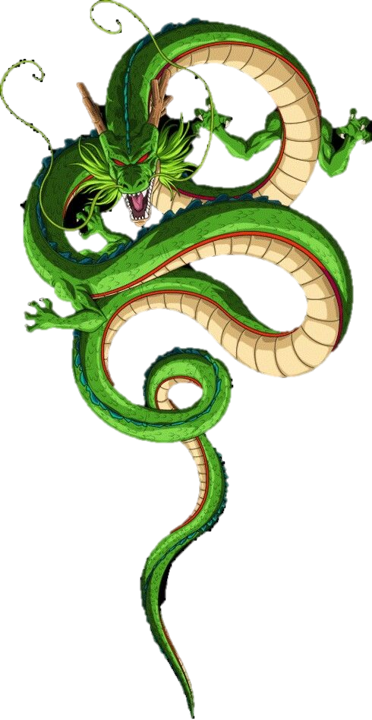
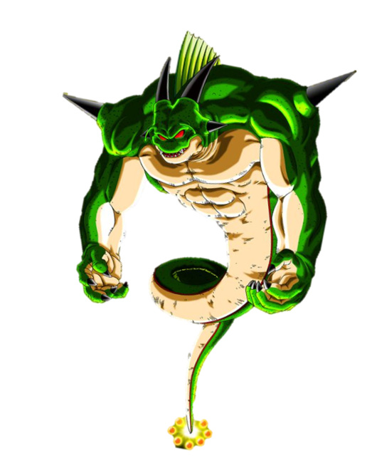

SHENLONG
Dragon Terrestre
Es un dragón que concede deseos, aparece cuando alguien reúne las Dragon Balls de la Tierra y pronuncia el conjuro mágico. Fue creado por Kami a partir de una estatuilla modelada por Mr. Popo y tiene la apariencia de un dragón chino de color verde. Cumple varios deseos durante la serie.


DIOS DRAGON
Super Shenlong
Super Shenlong es una entidad mítica de inmenso poder que reside en las Esferas del Dragón. A diferencia de su contraparte convencional, este Shenlong posee una apariencia más imponente y radiante, con un aura dorada que emana poder divino.


PORUNGA
Dragon namekusei
es el dios dragón del planeta Namek, habiendo reunido las siete esferas del dragón namekianas para invocarlo debe hacerse en el idioma nativo de Namek así como también para pedir los tres deseos. Está basado en un tipo de pez conocido como pez sapo.


SHENLONG DEFINITIVO
Dragón Supremo
Este dragón es el resultado de la utilización las las Esferas del Dragón Definitivas, cuyas fueron creadas por Kami, cuando él y el Gran Rey Demonio Piccolo eran todavía el Piccolo Original que tras su fusión de nuevo con él, volvieron a existir.


SHENLONG MALIGNO
Dragón Supremo
Es un extraño dragón que aparece cuando Son Goku reúne las Esferas del Dragón de la Tierra tras derrotar a Super Número 17. Estas habían sido corrompidas por su uso desmesurado, por lo que, en lugar de Shen Long, resultó al ser invocado, un dragón negro-azulado de apariencia malvada